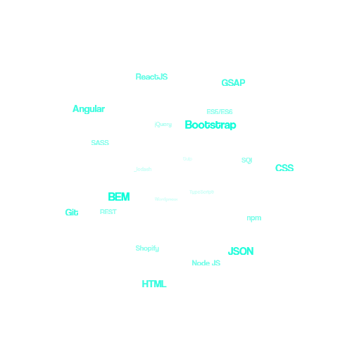

.
Hello, world.
Je suis Evan SPICKA
| Futur développeur web | Etudiant en BUT Informatique |
.
Qui suis-je ?
Je m'appelle Evan SPICKA, j'ai 18ans et je suis étudiant à l'IUT de Bayonne et du Pays Basque en BUT Informatique 2ème année.
Je suis passionné par le développement web, utilisant du C++ comme du Python en passant par l'HTML/CSS, j'approfondi en continu mon catalogue de language informatique.
Je suis organisé, motivé, serieux et sociable.
Egalement fan d'escalade en bloc, de jeux-vidéos et de la culture Japonaise.
